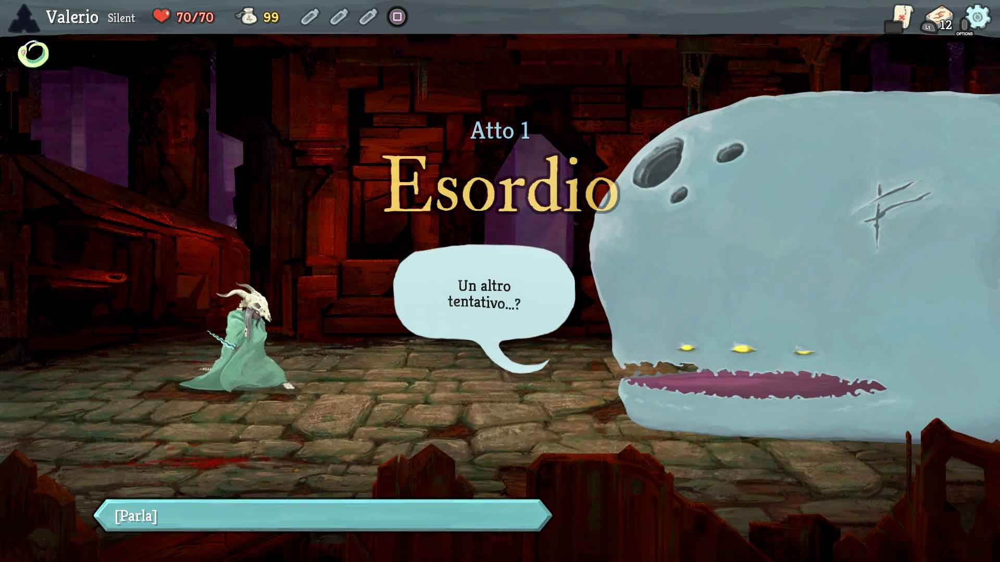
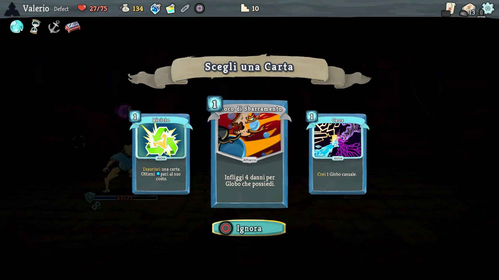
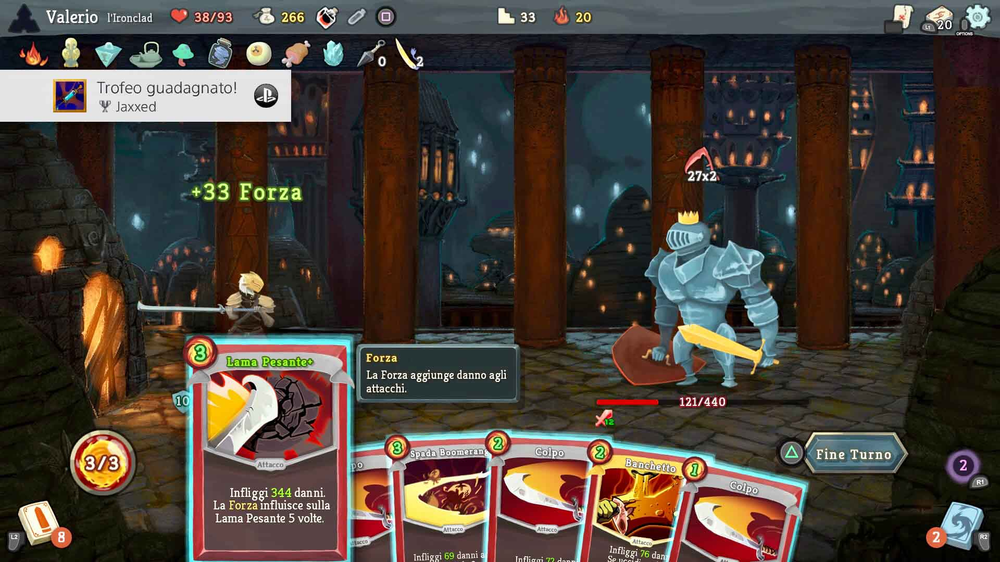
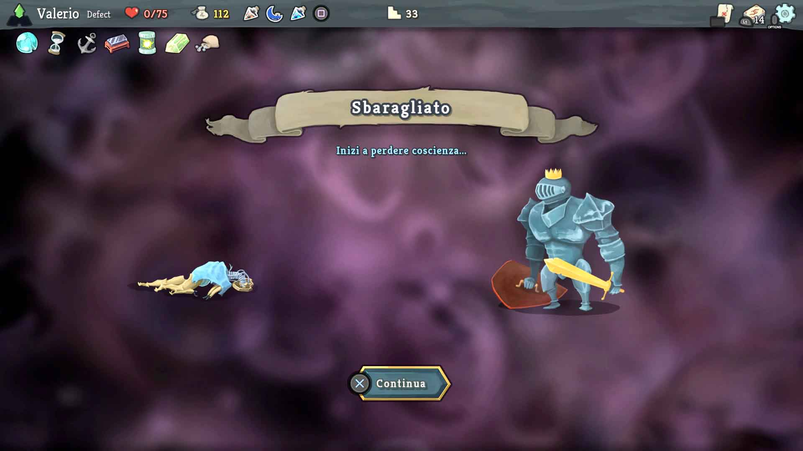
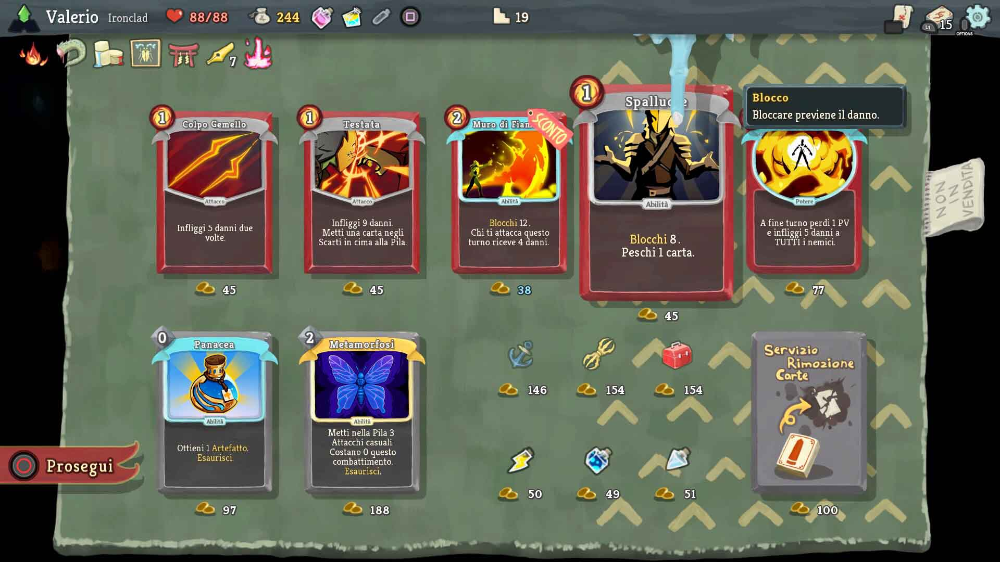

Slay the Spire
Slay the Spire has been an unexpected surprise, one of those titles that you lanch for the first time just to try it a bit, but then you find yourself 5 hours later still playing it, absorbed by its depth. In the following lines, I will try to explain what Slay the Spire is, why I enjoyed it so much and why, after more than 500 hours of gameplay, it's still able to entertain me.
Deck-Building Roguelite
Slay the Spire is a card game with Roguelite mechanics. At the start of each game, we can choose one of four different characters, each with its own starting deck. The game is turn-based and every turn, we have to decide which cards to use from the ones we draw. We also have a determined quantity of Energy, a resource necessary to play the cards in our hand.
 We will start every run with a base starting deck, to which we will add new and more powerful cards winning fights. At the and of each fight in fact the game gives us one of three cards we can choose from as a reward for the victory. We will also have the opportunity to increase our deck size buying cards from a merchant we will find once in a while. On our way we will obtain also the Relics - powerful items that will buffs permanently - and Potions - consumable items that can perform several actions, like damaging enemies, healing our character and more.
Our path is procedurally generated, so it will be casual and different in every game. On our way to the top of the Spire, we will fight normal enemies, mini-boss named Élites and at the and of each of the 3 acts a powerful Boss will wait for us. We will also find the Merchant - that will have a random inventory of cards, relics and potions - and the casual events that can be favourable or not. Finally, we will also find the Campfires where we can choose if we want to rest to regain Health Points or to upgrade one of our cards.
Challenge and satisfaction
Behind these apparently easy mechanics, Slay the Spire hides a unique depth and complexity. Being able to finish all 3 acts of the game is an exciting challenge but it is not easy to complete, not even at the first of 20 difficulties available.
The key to getting to the top of the Spire is the ability to build a deck where each card and relic is in synergy with the others in our possession. This is the aspect that makes Slay the Spire a compelling and satisfying game: building a deck that allows us to unleash a series of powerful attacks one after the other, or to poison the current boss so much, to be able to defeat it without even using an attack card, gives the player a sense of satisfaction and fulfilment that, personally, I rarely found in other productions. We start each game always with the same cards, without any progress carried from previous games. So we can rely only on our ability to adapt to the situation, choosing the best path and the best items possible to match those already in its possession.
 The Roguelite nature of the game and the randomness of the events force us to always try new strategies. For example, we could have succeeded in beating the game thanks to a well-matched pair of cards, but it is not certain that we will be successful again using the same two. Also, we can slay the spire in a run with an offensive deck, based on cards that increase the strength parameter and on attacks that scale with it, and winning the next game with a deck based totally on high defence.
The game is incredibly good in giving us the impression, even in the defeat, to have learned something. Each game increase our skills, our ability to make the best possible choices in building our deck, to choose the right cards to play during a fight and to choose the best path to follow to get to the end.
Achievements
Finally, a small mention of the Achievements or Trophies. The game features 44 Achievements from the base game and 2 from the single DLC. There are a few challenging objectives like completing the game at Ascension 20, the maximum difficulty, or completing the game in less than 20 minutes, finish the game with one single relic or with a deck of 5 or fewer cards. All these challenges are particularly interesting for gamers that already expert of the game and that are looking for a challenge within a challenge.
Final Thoughts
Slay the Spire is highly recommended for anyone who's looking for a challenging game and want to test himself. The game is incredibly fulfilling and motivate the player making him feel more intelligent and more capable every game. It has practically infinite longevity and it is sold at a budget price.
I recommend it with no reservations.
V-SCORE 9.5